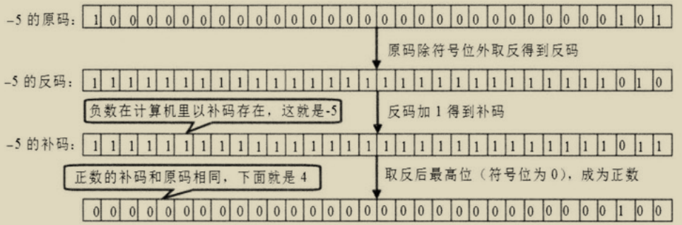
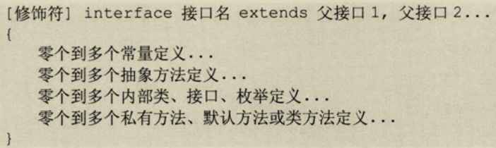

Java语言程序设计
Table of Contents
1 环境配置
1.1 运行 Java 程序
- 什么是
classpath？JVM 如何定位/查找执行类？ - 如何编译 java 文件？
# 编译单个文件, 并将内容放入output文件夹中
javac -encoding utf-8 -d output/ hello.java # 这是当文件含有中文时，指定UTF-8编码# 编译多个文件
javac -encoding utf-8 -d output/ src/*.java # 在shell的支持下，使用通配符
# 运行java类文件，需要指定classpath，并在主类使用完整的包名+类名格式
java -cp .\bin app.App # -cp 等价于 -classpath
# 如果编译前需要引入jar，那么使用下面的命令
javac -cp ".;d:\\javaTestIP\\httpcore-4.4.1.jar;d:\\javaTestIP\\httpclient-4.4.1.jar;d:\\javaTestIP\\commons-logging-1.2.jar"
TestIPMain.java
linux 下，对于需要依赖的 jar 包使用 -cp ，多个 jar 包之间使用冒号： java 命令运行时注意
当需要多个路径查找类时，应该使用分号，不过分号对于 shell 有特殊含义，应该使用字符串包含（ shell 的字符串）例如 在 power shell 中可以：
java -cp ".\lib\algs4.jar;.\test\" app.test
若存在多个源文件目录，可以使用下面的方法编译：
javac -encoding utf-8 -cp .\lib\algs4.jar -d test .\src\app\*.java .\src\app2\*.java
java 类可以有多个 main 类，需要在调用 jvm 时指定。（这样有利于测试指定单个类）
1.2 IDE
1.2.1 使用 Vscode 导入 jar 包
在 vacode 文件资源视图无法看见 .classpath 文件，需要打开文件管理器（使 用快捷键 Shift+Alt+R ），然后写入：
<classpathentry kind="lib" path="lib/jssc.jar" sourcepath="lib/sources/jSSC-2.7.0-Release.zip"/>
其中 kind 表示目录， path 表示 jar 路径名， sourcepath 则是 jar 的源码文件（ zip 文件）。 关于 .classpath 的详细解释eclipse项目中classpath文件详解
1.3 jar 包
jar 包使用什么压缩格式进行压缩？比这种压缩格式的文件的不同？ 254H
jar 包的好处？ 254H
jar 包命令详解： 255N,256N,257N
# 从dist目录创建jar包 jar cf test.jar -C dist/ jar cvf test.jar -C dist/ #显示压缩过程 jar cfM test.jar -C dist/ #不产生清单文件 jar cfm test.jar mainfest.txt -C dist/ #从mainfest.txt文件读取用户清单 jar cf test.jar -C dist/ # 查看jar包内容 jar tf test.jar jar tvf test.jar # 显示更详细的信息 # 解压缩文件 jar xf test.jar # 在当前目录下解压缩 jar xvf test.jar # 带着提示解压缩 # 更新jar文件 jar uvf test.jar Hello.class # 将Hello.class添加到test.jar包中 # 创建多版本jar包
清单文件的内容格式？ 255L
1.4 jdt
1.5 Meghanada-Mode
A Better Java Development Environment for Emacs
2 其他
2.1 main 方法
如何向 main 方法传入参数？
public class ArgsTest
{
public static void main(String[] args)
{
// 输出args数组的长度
System.out.println(args.length);
// 遍历args数组的每个元素
for (String arg : args)
{
System.out.println(arg);
}
}
}
# 在命令行中 ArgTest argone argtwo
2.2 Java 文档注释
3 数据结构
3.0.1 Java 标识符命名规则
- 标识符由数字（0~9）和字母（A~Z 和 a~z）、美元符号（$）、下 划线（_）以及 Unicode 字符集中符号大于 0xC0 的所有符号组合 构成（各符号之间没有空格）。
- 标识符的第一个符号为字母、下划线和美元符号，后面可以是任何 字母、数字、美元符号或下划线。
Java 关键字的特点？（都是小写）
3.0.2 Java 的变量类型
- 类变量：独立于方法之外的变量，用 static 修饰。
- 实例变量：独立于方法之外的变量，不过没有 static 修饰。
- 局部变量：类的方法中的变量。
共有哪些数据类型？（基本类型，引用类型，空类型）
3.1 创建数据类型时，定义后不进行初始化会怎样？
Java按照作用域分类，只有局部变量（位于方法体内）和类变量（位于类中）。 无论哪种作用域，变量都是具有其默认值的。基本数据类型的默认值
3.2 基本数据类型
3.2.1 基本数据类型的默认值
3.2.2 Java 的基本数据类型
基本数据类型共有哪些？ (大致分类：整型，浮点型，字符型，布尔型)
- byte：
- byte 数据类型是 8 位、有符号的，以二进制补码表示的整数；
- 最小值是 -128（-27）；
- 最大值是 127（27-1）；
- 默认值是 0；
- byte 类型用在大型数组中节约空间，主要代替整数，因为 byte 变量占用的空间只有 int 类型的四分之一；
- 例子：byte a = 100，byte b = -50。
- short：
- short 数据类型是 16 位、有符号的以二进制补码表示的整数
- 最小值是 -32768（-215）；
- 最大值是 32767（215 - 1）；
- Short 数据类型也可以像 byte 那样节省空间。一个 short 变量是 int 型变量所占空间的二分之一；
- 默认值是 0；
- 例子：short s = 1000，short r = -20000。
- int：
- int 数据类型是 32 位、有符号的以二进制补码表示的整数；
- 最小值是 -2,147,483,648（-231）；
- 最大值是 2,147,483,647（231 - 1）；
- 一般地整型变量默认为 int 类型；
- 默认值是 0 ；
- 例子：int a = 100000, int b = -200000。
- long：
- long 数据类型是 64 位、有符号的以二进制补码表示的整数；
- 最小值是 -9,223,372,036,854,775,808（-263）；
- 最大值是 9,223,372,036,854,775,807（263 -1）；
- 这种类型主要使用在需要比较大整数的系统上；
- 默认值是 0L；
- 例子： long a = 100000L，Long b = -200000L。
- “L”理论上不分大小写，但是若写成“l”容易与数字“1”混淆，不容易分辩。所以最好大写。
- float：
- float 数据类型是单精度、32 位、符合 IEEE 754 标准的浮点数；
- float 在储存大型浮点数组的时候可节省内存空间；
- 默认值是 0.0f；
- 浮点数不能用来表示精确的值，如货币；
- 例子：float f1 = 234.5f。
- double：
- double 数据类型是双精度、64 位、符合 IEEE 754 标准的浮点数；
- 浮点数的默认类型为 double 类型；
- double 类型同样不能表示精确的值，如货币；
- 默认值是 0.0d；
- 例子：double d1 = 123.4。
- boolean：
- boolean 数据类型表示一位的信息；
- 只有两个取值：true 和 false；
- 这种类型只作为一种标志来记录 true/false 情况；
- 默认值是 false；
- 例子：boolean one = true。
- char
- 类型是一个单一的 16 位 Unicode 字符；
- 最小值是 \u0000（即为 0）；
- 最大值是 \uffff（即为 65,535）；
- char 数据类型可以储存任何字符；
- 例子：char letter = ’A’;。
每个字面量都有其最大和最小指定范围，当字面量超出类型范围，不 会自动转换为更大的类型！！
字面量赋值需要小心，要考虑赋值会不会出现溢出！
3.2.2.1 整型字面量类型
- 十进制数形式：如 54、-67、0。
- 二进制(binary，基数是 2)：在值前面加一个前导 0b 或 0B,允许
的值有
[01](java9 之后)。 - 八进制数 （octal， 基数是 8）：在值前面加一个前导 0 来表示，
如 04,允许的值有
[0-7]。 - 十六进制 （hexadecimal， 基数是 16） ：在值前面加一个前导
的=0x= 或
0X表示。相较于八进制，程序员对数字更常用的是 十六进制，它清楚地与 8 的大小相匹配，如 8，16，32，和 64 位,允许的值有[0-9a-fA-F]。
二进制字面量默认 32 位，当后缀加上 L/l 后，位数变成 64 位。 68M
可以使用强制类型转换将二进制字面量变成 8 位(byte)，16 位(short).
byte binV8 = (byte)0b1001001;
- 整型字面量的表示含义：
若不加 L/l 则最大能表示 32 位，加上 L/l 则表示 64 位;任意使 用下划线进行分隔.
public class UnderscoreTest
{
public static void main(String[] args)
{
// 定义一个32位的二进制数,最高位是符号位。
int binVal = 0B1000_0000_0000_0000_0000_0000_0000_0011;
double pi = 3.14_15_92_65_36;
System.out.println(binVal);
System.out.println(pi);
double height = 8_8_4_8.23;
System.out.println(height);
}
}
3.2.2.2 整型无符号字面量
Java 不提供无符号数，但是可以通过如下规则得到: Java的无符号数
3.2.2.3 浮点类型字面量
- 十进制数形式：由数字和小数点组成，且必须有小数点，如 12.34、-98.0。
- 科学记数法形式：如 1.75e5( \(1.75\times 10^{5}\) ) 或 32e3，其中 e 或 E 之前必须有 数字，且 e 或 E 之后的数字必须为整数。
- 正无穷大：
POSITIVE_INFINITY - 负无穷大：
NEGATIVE_INFINITY - 非数：
NaN
POSITIVE_INFINITY === POSITIVE_INFINITY // true NEGATIVE_INFINITY === NEGATIVE_INFINITY //true NaN !== NaN // true
这些是 Float 类和 Double 类的字段。
public class FloatTest
{
public static void main(String[] args)
{
float af = 5.2345556f;
// 下面将看到af的值已经发生了改变
System.out.println(af);
double a = 0.0;
double c = Double.NEGATIVE_INFINITY;
float d = Float.NEGATIVE_INFINITY;
// 看到float和double的负无穷大是相等的。
System.out.println(c == d);
// 0.0除以0.0将出现非数
System.out.println(a / a);
// 两个非数之间是不相等的
System.out.println(a / a == Float.NaN);
// 所有正无穷大都是相等的
System.out.println(6.0 / 0 == 555.0/0);
// 负数除以0.0得到负无穷大
System.out.println(-8 / a);
// 下面代码将抛出除以0的异常
// System.out.println(0 / 0);
}
}
3.2.2.4 基本数据类型的默认类型
- 整数： int
- 浮点数： double
- 字符： char
3.2.2.5 其他的 Java 字面量
- 字符串字面量： 由双引号括起的字符序列，对于某些特殊的字符， 需要进行转义。
- null： 仅仅就是 null
- true： 表示真，为布尔类型
- false： 表示假
- 字符： 使用单引号括起的单个字符。每个字符占 16 位.
Java 不能像 C 语言一样，用单引号括起多个字符赋予更大的整型！！
int hello = 'HELL';
int hello = 'H'; long world = 'WORL'; // error
3.2.3 如何判断一个表达式的类型？
（表達式會類型提升）
3.2.4 自动类型转换
3.2.4.1 基本数据类型之间的转换
整型、实型（常量）、字符型数据可以混合运算。运算中，不同类型 的数据先转化为同一类型，然后进行运算。转换从低级到高级。 73H
低 ------------------------------------> 高 byte,short,char—> int —> long—> float —> double
- 不能对 boolean 类型进行类型转换。
- 不能把对象类型转换成不相关类的对象。
- 在把容量大的类型转换为容量小的类型时必须使用强制类型转换。
- 浮点数到整数的转换是通过舍弃小数得到，而不是四舍五入
3.2.4.2 基本数据类型 <==> 引用类型
基本类型与引用类型的互相转换就是装箱和拆箱。
3.2.5 强制类型转换
强制类型转换可以分为基本类型之间的转换和引用类型的转换，不能通过这种方式实现引用 类型和基本类型之间的转换。
对于基本类型，强制类型转换的作用是为了将更长的数据类型转换为更短的数据类型（比如 int到short）。当然，你也可以从短到长，不过这并没有太大意义。
使用格式 (type)Value 进行强制类型转换。 74H
(int)23.7 == 23; (int)-45.89f == -45
4 運算符
4.1 概述
各种运算符能作用的数据类型分别为？返回值分别是什么？
运算符分为： 算术运算符、赋值运算符、位运算符、逻辑运算符比较运算符、三目运输符
4.2 算术运算符
| 操作符 | 描述 |
|---|---|
+ 加法 |
相加运算符两侧的值 A + B 等于 30 |
- 减法 |
左操作数减去右操作数 A – B 等于 -10 |
* 乘法 |
相乘操作符两侧的值 A * B 等于 200 |
/ 除法 |
左操作数除以右操作数 B / A 等于 2 |
％ 取余 |
左操作数除以右操作数的余数 B%A 等于 0 |
++ 自增 |
操作数的值增加 1 B++ 或 ++B 等于 21（区别详见下文） |
-- 自减 |
操作数的值减少 1 B– 或 –B 等于 19（区别详见下文） |
如果除法的两个操作数都是整数，那么结果也是整数，否则就是浮点数。
如果数字与 0 相除，并且其中一个是浮点数，那么结果就是无穷大 （正/负）
public class DivTest
{
public static void main(String[] args)
{
double a = 5.2;
double b = 3.1;
double div = a / b;
// div的值将是1.6774193548387097
System.out.println(div);
// 输出正无穷大：Infinity
System.out.println("5除以0.0的结果是:" + 5 / 0.0);
// 输出负无穷大：-Infinity
System.out.println("-5除以0.0的结果是:" + - 5 / 0.0);
// 下面代码将出现异常
// java.lang.ArithmeticException: / by zero
System.out.println("-5除以0的结果是::" + -5 / 0);
}
}
求余运算符的操作数如果是整数，得到的结果一定是整数.
求余运算符的第二个操作数不能够是 0，否则发生 0 异常。
如果求余运算符的操作数存在浮点数，允许第二个操作数是 0 或 0.0,
得到的结果就是 NaN .
public class ModTest
{
public static void main(String[] args)
{
double a = 5.2;
double b = 3.1;
double mod = a % b;
System.out.println(mod); // mod的值为2.1
System.out.println("5对0.0求余的结果是:" + 5 % 0.0); // 输出非数:NaN
System.out.println("-5.0对0求余的结果是:" + -5.0 % 0); // 输出非数:NaN
System.out.println("0对5.0求余的结果是:" + 0 % 5.0); // 输出0.0
System.out.println("0对0.0求余的结果是:" + 0 % 0.0); // 输出非数:NaN
// 下面代码将出现异常：java.lang.ArithmeticException: / by zero
System.out.println("-5对0求余的结果是:" + -5 % 0);
}
}
- 前缀自增自减法(++a,–a): 先进行自增或者自减运算，再进行表达式运算。
- 后缀自增自减法(a++,a–): 先进行表达式运算，再进行自增或者自减运算
public class selfAddMinus{
public static void main(String[] args){
int a = 5;//定义一个变量；
int b = 5;
int x = 2*++a;
int y = 2*b++;
System.out.println("自增运算符前缀运算后a="+a+",x="+x);
System.out.println("自增运算符后缀运算后b="+b+",y="+y);
}
}
Java 的二义性？
4.3 赋值运算符
| 操作符 | 描述 | 例子 |
|---|---|---|
= |
简单的赋值运算符，将右操作数的值赋给左侧操作数 | C = A + B 将把 A + B 得到的值赋给 C |
+= |
加和赋值操作符，它把左操作数和右操作数相加赋值给左操作数 | C += A 等价于 C = C + A |
-= |
减和赋值操作符，它把左操作数和右操作数相减赋值给左操作数 | C-= A 等价于 C = C - A |
*= |
乘和赋值操作符，它把左操作数和右操作数相乘赋值给左操作数 | C *= A 等价于 C = C * A |
/= |
除和赋值操作符，它把左操作数和右操作数相除赋值给左操作数 | C /= A，C 与 A 同类型时等价于 C = C / A |
％= |
取模和赋值操作符，它把左操作数和右操作数取模后赋值给左操作数 | C％=A 等价于 C = C％A |
<<= |
左移位赋值运算符 | C <<= 2 等价于 C = C << 2 |
>>= |
右移位赋值运算符 | C >>= 2 等价于 C = C >> 2 |
＆= |
按位与赋值运算符 | C＆=2 等价于 C = C＆2 |
^= |
按位异或赋值操作符 | C ^= 2 等价于 C = C ^ 2 |
│= |
按位或赋值操作符 | C│= 2 等价于 C = C │ 2 |
数字的溢出赋值的底层情况是什么？ 74M
赋值运算符的扩展后版本与其等价版本会有哪些区别（底层效率）？ 84H
例如 a=a+1 与 a+=1 的区别 更加推荐使用后者
赋值运算符是表达式，返回左值被赋予的值。
4.4 位运算
位运算符的操作数只能是整数，返回的结果也是整数.
| 操作符 | 描述 | 例子 |
|---|---|---|
＆ |
如果相对应位都是 1，则结果为 1，否则为 0 | （A＆B），得到 12，即 0000 1100 |
│ |
如果相对应位都是 0，则结果为 0，否则为 1 | （A │ B）得到 61，即 0011 1101 |
^ |
如果相对应位值相同，则结果为 0，否则为 1 | （A ^ B）得到 49，即 0011 0001 |
〜 |
按位取反运算符翻转操作数的每一位，即 0 变成 1，1 变成 0。 | （〜A）得到-61，即 1100 0011 |
<< |
按位左移运算符。左操作数按位左移右操作数指定的位数。 | A << 2 得到 240，即 1111 0000 |
>> |
按位右移运算符。左操作数按位右移右操作数指定的位数。 | A >> 2 得到 15 即 1111 |
>>> |
按位右移补零操作符。左操作数的值按右操作数指定的位数右移，移动得到的空位以零填充。 | A>>>2 得到 15 即 0000 1111 |
Figure 1: 按位运算符的运算规则

Figure 2: -5 的原码，反码，补码
Figure 3: 左移位运算符
Figure 4: 右移位运算符 >>
Figure 5: 右移位补零运算符 >>>
4.4.1 移位运算符如何处理非正常操作数
- 当移动的位数大于 32（对于 int 类型）时，系统会将移位数与 32 求
余，得到的结果就是真正的移位数。 例如：
a >> 33等价于a >> 1. - 当移动位数大于 64（对于 long 类型），与处理 int 类型一样
4.4.2 移位运算符的性质
在不会丢失数据的情况下，变量 \(a\) 左移 n 位相当于 \(a\times 2^{n}\), 变量 \(a\) 右移 n 位相当于 \(a\div 2^{n}\)
4.4.3 异或⊕运算的性质
- 任何数和 0 做异或运算，结果仍然是原来的数，即 \(a \oplus 0=a\) 。
- 任何数和其自身做异或运算，结果是 0，即 \(a \oplus a=0;\) 。
- 异或运算满足交换律和结合律，即 \(a \oplus b \oplus a=b \oplus a \oplus a=b \oplus (a \oplus a)=b \oplus0=b;\) 。
- 若数 m 是两个数 a，b 的异或值，那么 a⊕m = b, b⊕m = a
4.5 关系运算符
表格中的实例整数变量 A 的值为 10，变量 B 的值为 20：
| 运算符 | 描述 | 例子 |
|---|---|---|
| == | 检查如果两个操作数的值是否相等，如果相等则条件为真。 | （A == B）为假。 |
| != | 检查如果两个操作数的值是否相等，如果值不相等则条件为真。 | (A != B) 为真。 |
| > | 检查左操作数的值是否大于右操作数的值，如果是那么条件为真。 | （A> B）为假。 |
| < | 检查左操作数的值是否小于右操作数的值，如果是那么条件为真。 | （A <B）为真。 |
| >= | 检查左操作数的值是否大于或等于右操作数的值，如果是那么条件为真。 | （A> = B）为假。 |
| <= | 检查左操作数的值是否小于或等于右操作数的值，如果是那么条件为真。 | （A <= B）为真。 |
关系运算符两边的操作数必须是相同类型，要么都是数字、字符，布尔，引用类型。返回布尔类型
值类型与引用类型不能一起比较.
引用类型的比较本质上比较它们的地址，而不是它们的值。
public class ComparableOperatorTest
{
public static void main(String[] args)
{
System.out.println("5是否大于 4.0：" + (5 > 4.0)); // 输出true
System.out.println("5和5.0是否相等：" + (5 == 5.0)); // 输出true
System.out.println("97和'a'是否相等：" + (97 == 'a')); // 输出true
System.out.println("true和false是否相等：" + (true == false)); // 输出false
// 创建2个ComparableOperatorTest对象，分别赋给t1和t2两个引用
ComparableOperatorTest t1 = new ComparableOperatorTest();
ComparableOperatorTest t2 = new ComparableOperatorTest();
// t1和t2是同一个类的两个实例的引用，所以可以比较，
// 但t1和t2引用不同的对象，所以返回false
System.out.println("t1是否等于t2：" + (t1 == t2));
// 直接将t1的值赋给t3，即让t3指向t1指向的对象
ComparableOperatorTest t3 = t1;
// t1和t3指向同一个对象，所以返回true
System.out.println("t1是否等于t3：" + (t1 == t3));
}
}
4.6 逻辑运算符
| 运算符 | 用法 | 含义 | 说明 | 实例 | 结果 |
|---|---|---|---|---|---|
&& |
a&&b |
短路与 | ab 全为 true 时，计算结果为 true，否则为 false。 | 2>1&&3<4 | true |
││ |
a││b |
短路或 | ab 全为 false 时，计算结果为 false，否则为 true。 | 2<1││3>4 | false |
! |
!a |
逻辑非 | a 为 true 时，值为 false，a 为 false 时，值为 true | !(2>4) | true |
│ |
a│b |
逻辑或 | ab 全为 false 时，计算结果为 false，否则为 true | 1>2│3>5 | false |
& |
a&b |
逻辑与 | ab 全为 true 时，计算结果为 true，否则为 false | 1<2&3<5 | true |
^ |
a^b |
逻辑异或 | 若 a 或 b 返回的布尔值不一样（一个返回 true，一个返回 false），结果返回 true | 4>=5^’a’<’c’ | true |
逻辑运算符的操作数必须是返回布尔类型的表达式或变量/常量，结果返回布尔类型。
- && 与 & 区别：如果 a 为 false，则不计算 b（因为不论 b 为何值，结果都为 false）
- || 与 | 区别：如果 a 为 true，则不计算 b（因为不论 b 为何值，结果都为 true）
短路与（&&）和短路或（||）能够采用最优化的计算方式，从而提高效率。在实际编程时，应该优先考虑使用短路与和短路或。
逻辑运算符的优先级为：！运算级别最高，&& 运算高于 || 运算。！ 运算符的优先级高于算术运算符，而 && 和 || 运算则低于关系运算 符。结合方向是：逻辑非（单目运算符）具有右结合性，逻辑与和逻 辑或（双目运算符）具有左结合性。
public class LogicOperatorTest
{
public static void main(String[] args)
{
// 直接对false求非运算，将返回true
System.out.println(!false);
// 5>3返回true，'6'转换为整数54，'6'>10返回true，求与后返回true
System.out.println(5 > 3 && '6' > 10);
// 4>=5返回false，'c'>'a'返回true。求或后返回true
System.out.println(4 >= 5 || 'c' > 'a');
// 4>=5返回false，'c'>'a'返回true。两个不同的操作数求异或返回true
System.out.println(4 >= 5 ^ 'c' > 'a');
// 定义变量a,b，并为两个变量赋值
int a = 5;
int b = 10;
// 对a > 4和b++ > 10求或运算
if (a > 4 | b++ > 10)
{
// 输出a的值是5，b的值是11。
System.out.println("a的值是:" + a + "，b的值是:" + b);
}
// 定义变量c,d，并为两个变量赋值
int c = 5;
int d = 10;
// c > 4 || d++ > 10求或运算
if (c > 4 || d++ > 10)
{
// 输出c的值是5，d的值是10。
System.out.println("c的值是:" + c + "，d的值是:" + d);
}
}
}
4.7 条件运算符 ?:
Java 提供了一个特别的三元运算符（也叫三目运算符）经常用于取 代某个类型的 if-then-else 语句。条件运算符的符号表示为“?:”， 使用该运算符时需要有三个操作数，因此称其为三目运算符。使用条 件运算符的一般语法结构为：
result = <expression> ? <statement1> : <statement3>;
expression 是一个布尔表达式。当 expression 为真时，执行 statement1， 否则就执行 statement3。此三元运算符要求返回一个 结果，因此要实现简单的二分支程序，即可使用该条件运算符。
public class ThreeTest
{
public static void main(String[] args)
{
String str = 5 > 3 ? "5大于3" : "5不大于3";
System.out.println(str); // 输出"5大于3"
String str2 = null;
if (5 > 3)
{
str2 = "5大于3";
}
else
{
str2 = "5不大于3";
}
int a = 11;
int b = 12;
// 三目运算符支持嵌套
System.out.println(a > b ?
"a大于b" : (a < b ? "a小于b" : "a等于b"));
}
}
4.8 Java 中的逗号
关于 Java 的逗号：在 java 中，逗号只能用来分隔方法的参数，或者分割多个变量的声明， 或者用于 for 循环的表达式中。
int a, b, c, d = 1000; // 变量声明的分隔
for (int i = 0, j = 0; i < 10; ++i, ++j) { // for循环表达式的使用
StdOut.printf("%d",j); // 函数参数的分隔
}
4.9 运算符优先级
| 优先级 | 运算符 | 结合性 |
|---|---|---|
| 1 | ()、[]、{} |
从左向右 |
| 2 | !、+、-、~、++、-- |
从右向左 |
| 3 | *、/、% |
从左向右 |
| 4 | +、- |
从左向右 |
| 5 | «、»、>>> |
从左向右 |
| 6 | <、<=、>、>=、instanceof |
从左向右 |
| 7 | ==、!= |
从左向右 |
| 8 | & |
从左向右 |
| 9 | ^ |
从左向右 |
| 10 | │ |
从左向右 |
| 11 | && |
从左向右 |
| 12 | ││ |
从左向右 |
| 13 | ?: |
从右向左 |
| 14 | =、+=、-=、*=、/=、&=、│=、^=、~=、«=、»=、>>>= |
从右向左 |
使用优先级为 1 的小括号可以改变其他运算符的优先级，即如果需 要将具有较低优先级的运算符先运算，则可以使用小括号将该运算符 和操作符括起来。
--y || ++x && ++z;
这个表达式中包含了算术运算符和逻辑运算符。根据表 1 中列出的优先级，可以确定它的执行顺序如下：
- ① 先计算 y 的自减运算符，即 –y。
- ② 再计算 x 的自增运算符，即 ++x。
- ③ 接着计算 z 的自增运算符，即 ++z。
- ④ 由于逻辑与比逻辑或的优先级高，这里将 ② 和 ③ 的结果进行逻辑与运算，即 ++x && ++z。
- ⑤ 最后将 ④ 的结果与 ① 进行逻辑或运算，即 –y||++x&&++z。
5 流程控制
5.1 条件语句
5.1.1 if 语句
if 语句的最简语法格式如下，表示“如果满足某种条件，就进行某种处理”。
if (条件表达式) {
语句块;
}
- 条件表达式：条件表达式可以是任意一种逻辑表达式，最后返回 的结果必须是一个布尔值。取值可以是一个单纯的布尔变量或常 量，也可以是使用关系或布尔运算符的表达式。如果条件为真， 那么执行语句块；如果条件为假，则语句块将被绕过而不被执行。
- 语句块：该语句块可以是一条语句也可以是多条语句。如果仅有 一条语句，可省略条件语句中的大括号 {}。当从编程规范角度不 要省略大括号，省略大括号会使程序的可读性变差。
Figure 6: if 条件语句的运行流程
public static void main(String[] args) {
int num1 = 50;
int num2 = 34;
if (num1 > num2) {
System.out.println("num1大于num2");
}
if (num1 == num2) {
System.out.println("num2等于num2");
}
if (num1 < num2) {
System.out.println("num1小于num2");
}
}
Figure 7: if-else 语句
public static void main(String[] args) {
int num1 = 50;
int num2 = 34;
// 如果num1等于num2
if (num1 == num2) {
System.out.println("num1等于num2");
}
// 如果num1大于num2
if (num1 > num2) {
System.out.println("num1大于num2");
} else {
// 否则就是num1小于num2
System.out.println("num1小于num2");
}
}
Figure 8: if-else-if 语句
if(表达式1) {
语句块1;
} else if(表达式2) {
语句块2;
...
} else if(表达式n) {
语句块n;
} else {
语句块n+1;
}
5.1.1.1 else 语句如何匹配 if？
若 if 省略了括号，那么 else 会匹配最近一条 if 语句，若匹配不到，则编译错误！
public class IfTest
{
public static void main(String[] args)
{
int age = 30;
if (age > 20)
// 只有当age > 20时，下面花括号括起来的语句块才会执行
// 花括号括起来的语句是一个整体，要么一起执行，要么一起不会执行
{
System.out.println("年龄已经大于20岁了");
System.out.println("20岁以上的人应该学会承担责任...");
}
// 定义变量a ，并为其赋值
int a = 5;
if (a > 4)
// 如果a>4，执行下面的执行体，只有一行代码作为代码块
System.out.println("a大于4");
else
// 否则，执行下面的执行体，只有一行代码作为代码块
System.out.println("a不大于4");
// 定义变量b ，并为其赋值
int b = 5;
if (b > 4)
// 如果b>4，执行下面的执行体，只有一行代码作为代码块
System.out.println("b大于4");
else
// 否则，执行下面的执行体，只有一行代码作为代码块
b--;
// 对于下面代码而言，它已经不再是条件执行体的一部分，因此总会执行。
System.out.println("b不大于4");
// 定义变量c ，并为其赋值
int c = 5;
if (c > 4)
// 如果b>4，执行下面的执行体，将只有c--;一行代码为条件体
c--;
// 下面是一行普通代码，不属于条件体
System.out.println("c大于4");
// 此处的else将没有if语句，因此编译出错。
else
// 否则，执行下面的执行体，只有一行代码作为代码块
System.out.println("c不大于4");
}
}
5.1.2 switch 语句
switch(表达式) {
case 值1:
语句块1;
break;
case 值2:
语句块2;
break;
…
case 值n:
语句块n;
break;
default:
语句块n+1;
break;
}
- switch
- 小括号里要放一个整型变量或字符型变量。表达式必须为 byte，
short，int，char 类型。
Java7 增强了 switch 语句的功能，允许 switch 语句的控制表达式 是 java.lang.String 类型的变量或表达式。只能是 java.lang.String 类型，不能是 StringBuffer 或 StringBuilder 这两种字符串的类型。 - case
- 表示“情况，情形”，case 标签可以是：
- 类型为 char、byte、 short 或 int 的常量表达式。
- 枚举常量。
- 从 Java SE 7 开始， case 标签还可以是字符串字面量。
- default
- 表示“默认”，即其他情况都不满足。default 后要紧跟冒号，default 块和 case 块的先后顺序可以变动，不会影响程序执行结果。通常，default 块放在末尾，也可以省略不写。
- break
- 表示“停止”，即跳出当前结构。
Figure 9: switch 语句
5.1.2.1 嵌套的 switch 语句
public static void main(String[] args) {
switch (count) {
case 1:
switch (target) {
case 0:
System.out.println("target is zero");
break;
case 1:
System.out.println("target is one");
break;
}
break;
case 2: // ...
}
}
5.1.2.2 没有 break 的 case 语句
如果在 case 分支语句的末尾没有 break 语句， 有可能触发多个 case 分支。那么就会接着执行下一个 case 分支语句 。这种情况 相 当危险，常常会引发错误。为此，我们在程序中从不使用 switch 语句。
switch (i) {
case 1:
case 2:
System.out.println("I'm one or two");
break;
case 3:
System.out.println("I'm three");
case 4:
System.out.println("I'm four");
default:
System.out.println("I'm not a number");
break;
}
5.1.2.3 没有主体的 case 语句
switch (i) {
case 1:
case 2:
System.out.println("I'm one or two"); // 当i等于1或2都会被执行
break;
default:
System.out.println("I'm not a number");
break;
}
5.1.3 if 与 switch 的区别
- 从使用效率上区分从使用效率上区分，在对同一个变量的不同值 作条件判断时，既可以使用 switch 语句，也可以使用 if 语句。 使用 switch 语句的效率更高一些，尤其是判断的分支越多，越 明显。
- 从实用性上区分从语句的实用性角度区分，switch 语句不如 if 条件语句，if 语句
是应用最广泛和最实用的语句。
- 何时使用 if 语句和 switch 语句
在程序开发的过程中，何时使用 if 语句和 switch 语句，需要根据 实际情况而定，应尽量做到物尽其用。不能因为 switch 语句的效率 高就一直使用，也不能因为 if 语句常用就不用 switch 语句。需要 根据实际情况，具体问题具体分析，使用最适合的条件语句。
5.2 循环语句
| 循环 | 描述 |
|---|---|
| while循环 | 在给定条件为真时重复语句或语句组，它在执行循环体之前测试条件。 |
| for循环 | 多次执行一系列语句，并缩写管理循环变量的代码。 |
| 增强的for循环 | 这主要用于遍历元素的集合，包括数组。 |
| do…while循环 | 像while语句一样，但是它在末端测试循环体的条件。 |
5.2.1 for循环
for(initialization; boolean_expression; update) {
// Statements
}
在上面语法中，
- 首先执行初始化(
initialization)步骤，并且仅执行一次。此步骤用于声明和初始化循环控制变量，此步骤以分号(;)结束。 - 接下来，计算布尔表达式(
boolean_expression)。 如果结果为：true，则执行循环体。 如果为false，则不执行循环体，控制跳转到for循环之后的下一个语句。 - 在执行for循环体之后，控件跳回到update语句。 此语句用于更新任何循环控制变量。此语句可以留空，最后是分号(;)。
- 现在再次评估布尔表达式(
boolean_expression)。 如果结果为：true，则循环执行并重复该过程(循环体，然后是更新步骤，然后是布尔表达式)。 布尔表达式为false后，for循环终止。
Figure 10: for语句的流程图
5.2.2 增强的for循环
for(declaration : expression) {
// Statements
}
在上面语法中，
declaration- 新声明的块变量，是与要访问的数组元素兼容的类型。变量将在for块中可用，其值将与当前数组元素相同。expression - 这是要循环的数组。- 表达式(
expression)可以是返回的数组变量或方法调用。
public class Test {
public static void main(String args[]) {
int [] numbers = {10, 20, 30, 40, 50};
for(int x : numbers ) {
System.out.print( x );
System.out.print(",");
}
System.out.print("\n");
String [] names = {"James", "Curry", "Kobe", "Jordan"};
for( String name : names ) {
System.out.print( name );
System.out.print(",");
}
}
}//原文出自【易百教程】，商业转载请联系作者获得授权，非商业请保留原文链接：https://www.yiibai.com/java/java_loop_control.html
5.2.3 while循环
while(boolean_expression) {
// 执行语句
}
Figure 11: while语句的流程图
import java.util.ArrayList;
import java.util.Iterator;
import java.util.List;
public class JavaWhileLoop {
public static void main(String[] args) {
List<String> veggies = new ArrayList<>();
veggies.add("油麦菜");
veggies.add("红豆角");
veggies.add("西红柿");
Iterator<String> it = veggies.iterator();
while (it.hasNext()) {
System.out.println(it.next());
}
}
}//原文出自【易百教程】，商业转载请联系作者获得授权，非商业请保留原文链接：https://www.yiibai.com/java/java_while_loop.html
5.2.4 do……while循环
do {
// Statements
}while(boolean_expression);//原文出自【易百教程】，商业转载请联系作者获得授权，非商业请保留原文链接：https://www.yiibai.com/java/java_do_while_loop.html
Figure 12: do……while循环的流程图
//package com.java.javadowhileloop;
public class DoWhileTrueJava {
public static void main(String[] args) throws InterruptedException {
do {
System.out.println("Start Processing inside do while loop");
// 在指定目录中查找文件
// 如果找到，则处理它，例如：将文件信息插入数据库
System.out.println("End Processing of do while loop");
Thread.sleep(5 * 1000); // 暂停5秒，接着执行
} while (true);
}
}//原文出自【易百教程】，商业转载请联系作者获得授权，非商业请保留原文链接：https://www.yiibai.com/java/java_do_while_loop.html
5.3 跳转语句
| 跳转 | 描述 |
|---|---|
| break语句 | 终止循环或switch语句，并立即将执行转移到在循环或switch之后的语句。 |
| continue语句 | 使循环跳过其主体的其余部分，并在重复之前立即重新测试其状态。 |
Java语言的标签仅仅只有在循环前面才有效 ！
5.3.1 break
Java编程语言中的break语句有以下两种用法
- 当在循环内遇到break语句时，循环立即终止，程序控制在循环体之后的下一个语句处重新开始。
- 它可以用于在switch语句中终止一个case。
// package com.yiibai.util;
public class JavaBreak {
public static void main(String[] args) {
String[] arr = { "Y", "I", "I", "B", "A", "I" };
// 在 for 循环中使用 break
for (int len = 0; len < arr.length; len++) {
if (arr[len].equals("I")) {
System.out.println("Array contains 'I' at index: " + len);
// 当找到字母时使用`break`语句中断循环
break;
}
}
// 在 while 循环中使用 break
int len = 0;
while (len < arr.length) {
if (arr[len].equals("B")) {
System.out.println("Array contains 'B' at index: " + len);
// 当找到字母时使用`break`语句中断循环
break;
}
len++;
}
len = 0;
// 在 do-while循环中使用 break
do {
if (arr[len].equals("A")) {
System.out.println("Array contains 'A' at index: " + len);
// 当找到字母时使用`break`语句中断循环
break;
}
len++;
} while (len < arr.length);
}
}//原文出自【易百教程】，商业转载请联系作者获得授权，非商业请保留原文链接：https://www.yiibai.com/java/java_break_statement.html
5.3.1.1 使用标签的break语句
默认情况下，break语句只能终止所处的那一层循环，若嵌套多层循环，无法使用break语句 完美跳出，而使用标签则可以做到跳出到任意位置。
// package com.yiibai.util;
public class JavaBreakLabel {
public static void main(String[] args) {
int[][] arr = { { 1, 2 }, { 3, 4 }, { 9, 10 }, { 11, 12 } };
boolean found = false;
int row = 0;
int col = 0;
// 查找第一个大于10的整数所在的索引值
searchint:
for (row = 0; row < arr.length; row++) {
for (col = 0; col < arr[row].length; col++) {
if (arr[row][col] > 10) {
found = true;
// 使用 break 标签来终止外部语句,标签位于哪个循环语句，它就跳出到哪个循环语句！
break searchint;
}
}
}
if (found)
System.out.println("First int greater than 10 is found at index: [" + row + "," + col + "]");
}
}//原文出自【易百教程】，商业转载请联系作者获得授权，非商业请保留原文链接：https://www.yiibai.com/java/java_break_statement.html
5.3.2 continue
Java continue语句用于继续循环。 它继续程序的当前流程，并在指定条件下跳过剩余的代码。在内循环的情况下，它仅继续内循环。
注意！ for循环下的continue语句不会跳过迭代部分！
public class ContinueExample {
public static void main(String[] args) {
for (int i = 1; i <= 10; i++) { // 即便 continue 语句运行过，迭代部分还是会继续执行！
if (i == 5) {
continue; // 跳过剩余部分
}
System.out.println(i);
}
}
}
5.3.2.1 加上标签的continue语句
紧跟标签的continue语句会跳过标签所标识循环的当前循环的剩下语句
public class ContinueTest2
{
public static void main(String[] args)
{
// 外层循环
outer:
for (int i = 0 ; i < 5 ; i++ )
{
// 内层循环
for (int j = 0; j < 3 ; j++ )
{
System.out.println("i的值为:" + i + " j的值为:" + j);
if (j == 1)
{
// 忽略outer标签所指定的循环中本次循环所剩下语句。
continue outer;
}
}
}
}
}
5.3.3 return
直接结束整个方法的语句，只要运行到return语句，就会结束整个方法。
6 抽象类
“包含抽象方法的类”，但是如果一个类不包含抽象方法，只是用 abstract 修饰的话也是
抽象类。也就是说抽象类不一定必须含有抽象方法,我认为这个定义是合理的，因为如果一
个抽象类不包含任何抽象方法，为何还要设计为抽象类？
[public] abstract class ClassName {
abstract void fun();
}
6.1 抽象类与普通类的区别
- 抽象方法必须为public或者protected（因为如果为private，则不能被子类继承，子类 便无法实现该方法），缺省情况下默认为public。
- 抽象类不能用来创建对象；
- 如果一个类继承于一个抽象类，则子类必须实现父类的抽象方法。如果子类没有实现父 类的抽象方法，则必须将子类也定义为为abstract类。
7 继承和组合
继承和组合的关系分别是 “Is A” 和 “Has A” 的关系
7.1 继承
通过继承，基类（也称为基类型）定义了给定类型的常见状态和行为，并允许子类（也称为 子类型）提供该状态和行为的自身版本。
7.1.1 使用继承的设计模式
7.1.1.1 层状超类模式
在这种情况下，我们使用继承将公共代码移动到基类（超类型）。
以下是此模式的基本实现：
public class Entity {
protected long id;
// setters
}
public class User extends Entity {
// additional fields and methods
}
7.1.1.2 模板方法模式
在模板方法模式中，我们可以使用基类来定义不变的部分，然后在子类中实现变的部分：
public abstract class ComputerBuilder {
public final Computer buildComputer() {
addProcessor();
addMemory();
}
public abstract void addProcessor();
public abstract void addMemory();
}
public class StandardComputerBuilder extends ComputerBuilder {
@Override
public void addProcessor() {
// method implementation
}
@Override
public void addMemory() {
// method implementation
}
}
8 类
8.1 封装
封装将对象的数据保护起来，使得无法让外部访问对象的数据。
8.1.1 如何能够安全的更改對象的“状态”？
通過方法進行字段的訪問。
8.2 类之间的关系
8.2.1 依赖(user-a)
类的方法使用了另一个类。
8.2.2 组合(has-a)
类的字段含有另一类。
8.2.3 继承(is-a)
表示特殊到一般的关系。
8.3 OOP与结构化的程序设计
结构化的程序设计就是将算法放在第一位，数据放在第二位《算法+数据=程序》
OOP则相反《数据+算法=程序》
8.4 类的成员
8.4.1 方法
8.4.1.1 更改器方法
8.4.1.2 访问器方法
8.5 构造函数
构造函数主要用于创建一个对象（也就是把对象的数据进行初始化）。构造函数必须显式创 建，若没有创建构造函数，java会默认的创建一个默认构造函数，它既不接受参数，也没有 方法体。
8.5.1 调用构造器后会发生什么？
当构造器被调用时，系统会先为该对象分配内存，并未这个对象执行默认的初始化。
8.5.2 默认构造器何时会存在？
只有当类没有被指定任何构造器时，系统才会分配默认构造函数。
8.5.3 构造器的访问权限
构造器与普通方法具有一样的访问权限，一般情况下构造函数是为了创建对象，一般为
public 。
8.5.4 构造器重载
由于构造器允许被重载，那么如何在一个构造器调用另一个构造器呢？
在同一个类， 通过 this 来获取另一个构造器。
public class Apple
{
public String name;
public String color;
public double weight;
public Apple(){}
// 两个参数的构造器
public Apple(String name , String color)
{
this.name = name;
this.color = color;
}
// 三个参数的构造器
public Apple(String name , String color , double weight)
{
// 通过this调用另一个重载的构造器的初始化代码
this(name , color);
// 下面this引用该构造器正在初始化的Java对象
this.weight = weight;
}
}
9 對象
9.1 對象的狀態
對象的狀態就是對象的字段在某一時間的值。
9.2 对象的行为
描述了对象能够做的动作和能接受的动作。
9.3 对象的标识
标识了唯一的对象（尽管具有相同的行为和状态）
9.4 对象与对象变量的区别？
10 接口
接口（英文：Interface），在Java编程语言中是一个抽象类型，是抽象方法的集合，接口
以 interface 来声明。一个类通过继承接口的方式，从而来继承接口的抽象方法。
接口并不是类，编写接口的方式和类很相似，但是它们属于不同的概念。类描述对象的属性 和方法。接口则包含类要实现的方法。
除非实现接口的类是抽象类，否则该类要定义接口中的所有方法。
接口无法被实例化，但是可以被实现。一个实现接口的类，必须实现接口内所描述的所有方 法，否则就必须声明为抽象类。
在 Java 中，接口类型可用来声明一个变量，他们可以成为一个空指针，或是被绑定在一个 以此接口实现的对象。
10.1 定义

Figure 13: Java中接口的定义
10.1.1 接口的作用域
默认情况下，接口总是 Public 访问权限
10.1.2 接口中允许的成员
10.1.3 接口字段
接口定义的字段总是 public static final 作用域！
int MAX_SIZE = 50; // 与下面的一样 public static final int MAX_SIZE = 10;
10.1.4 接口方法
方法会被隐式地指定为 public abstract 方法且只能是 public abstract 方法（用其
他关键字，比如 private、protected、static、 final 等修饰会报编译错误）
10.2 接口的继承
接口允许继承任意多个接口！但是接口只能继承接口！
接口的继承使用 extends 关键字,若具有多个父接口，那么每个父接口用逗号分隔！
interface InterfaceA
{
int PROP_A = 5;
void testA();
}
interface InterfaceB
{
int PROP_B = 6;
void testB();
}
interface InterfaceC extends InterfaceA, InterfaceB
{
int PROP_C = 7;
void testC();
}
public class InterfaceExtendsTest
{
public static void main(String[] args)
{
System.out.println(InterfaceC.PROP_A);
System.out.println(InterfaceC.PROP_B);
System.out.println(InterfaceC.PROP_C);
}
}
10.3 使用接口
接口有如下几个用途：
- 定义变量，也可用于强制类型转换
- 调用接口中定义的变量
- 被其他类实现(接口规定了输入和输出，但是没有规定如何实现这个方法)
10.3.1 实现接口
Figure 14: 实现接口语法
10.3.2 抽象的类
若类没有实现所有的方法，那么类必须被定义为抽象类！
10.3.3 接口变量
可以使用接口作为类型声明一个引用变量，该变量必须引用一个实现了接口的类的对象！
10.4 抽象类与接口
10.4.1 语法层面上的区别
- 抽象类可以提供成员方法的实现细节，而接口中只能存在public abstract 方法；
- 抽象类中的成员变量可以是各种作用域的，而接口中的成员变量只能是
public static final作用域的； - 接口中不能含有静态代码块以及静态方法，而抽象类可以有静态代码块和静态方法；
- 一个类只能继承一个抽象类，而一个类却可以实现多个接口。
10.4.2 设计层面上的区别
- 抽象类是对一种事物的抽象，即对类抽象，而接口是对行为的抽象。抽象类是对整个类
整体进行抽象，包括属性、行为，但是接口却是对类局部（行为）进行抽象。
举个简单的例子 ，飞机和鸟是不同类的事物，但是它们都有一个共性，就是都会飞。 那么在设计的时候，可以将飞机设计为一个类Airplane，将鸟设计为一个类Bird，但是 不能将飞行这个特性也设计为类，因此它只是一个行为特性，并不是对一类事物的抽象 描述。此时可以将飞行 设计为一个接口Fly，包含方法fly()，然后Airplane和Bird分别 根据自己的需要实现Fly这个接口。然后至于有不同种类的飞机，比如战斗机、民用飞机 等直接继承 Airplane即可，对于鸟也是类似的，不同种类的鸟直接继承Bird类即可。从 这里可以看出，
继承 是一个 “是不是” 的关系，而 接口 实现则是 “有没有” 的关系。如果一个 类继承了某个抽象类，则子类必定是抽象类的种类，而接口实现则是有没有、具备不具 备的关系，比如鸟是否能飞（或者是否具备飞行这个特点），能飞行则可以实现这个接 口，不能飞行就不实现这个接口。 - 设计层面不同，抽象类作为很多子类的父类，它是一种模板式设计。而接口是一种行为
规范，它是一种辐射式设计。
什么是模板式设计 ？最简单例子，大家都用过ppt里面的模板，如果用模板A设计了ppt B 和ppt C，ppt B和ppt C公共的部分就是模板A了，如果它们的公共部分需要改动，则只 需要改动模板A就可以了，不需要重新对ppt B和ppt C进行改动。
辐射式设计 ，比如某个电梯都装了某种报警器，一旦要更新报警器，就必须全部更新。 也就是说对于抽象类，如果需要添加新的方法，可以直接在抽象类中添加具体的实现， 子类可以不进行变更；而对于接口则不行，如果接口进行了变更，则所有实现这个接口 的类都必须进行相应的改动。